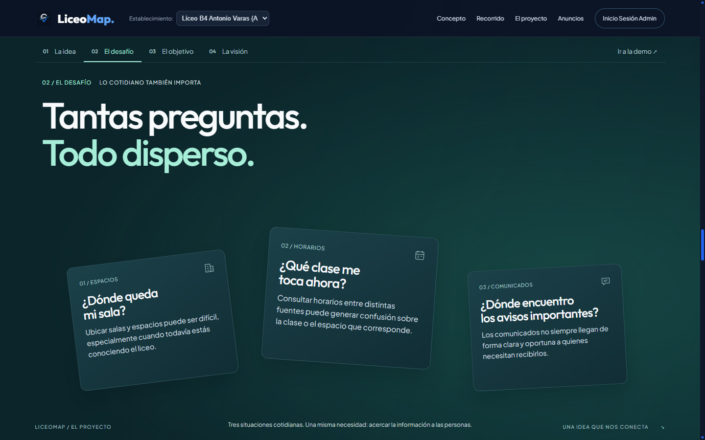
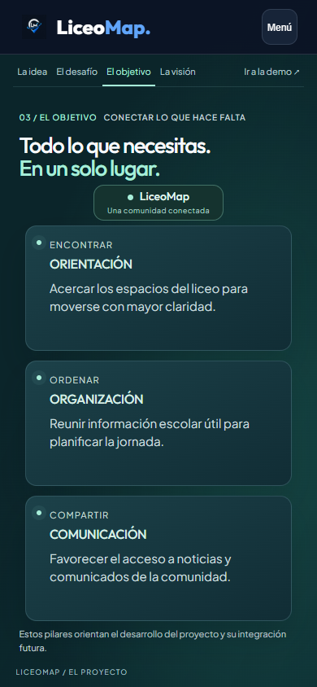
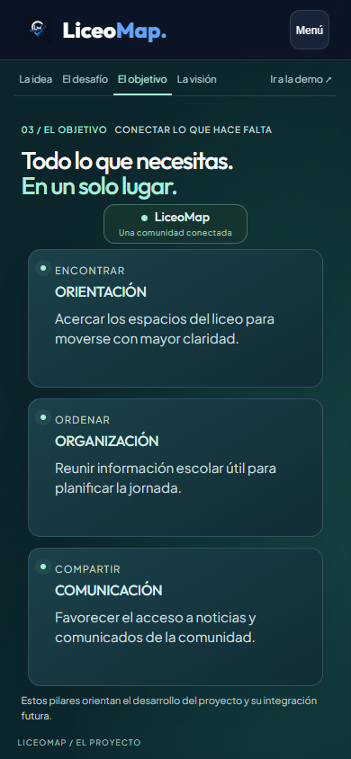
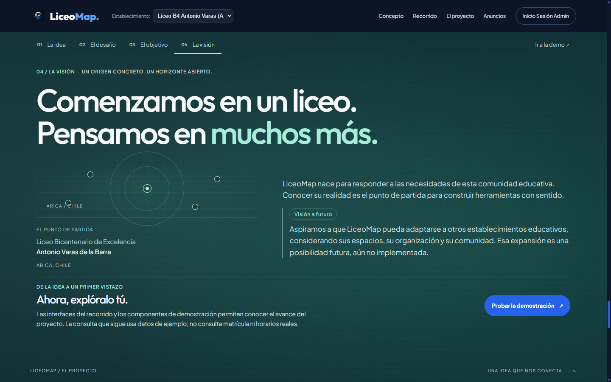
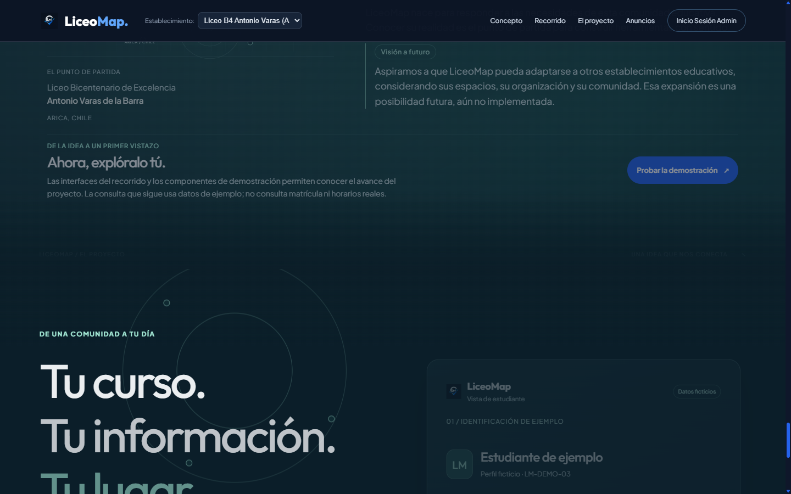
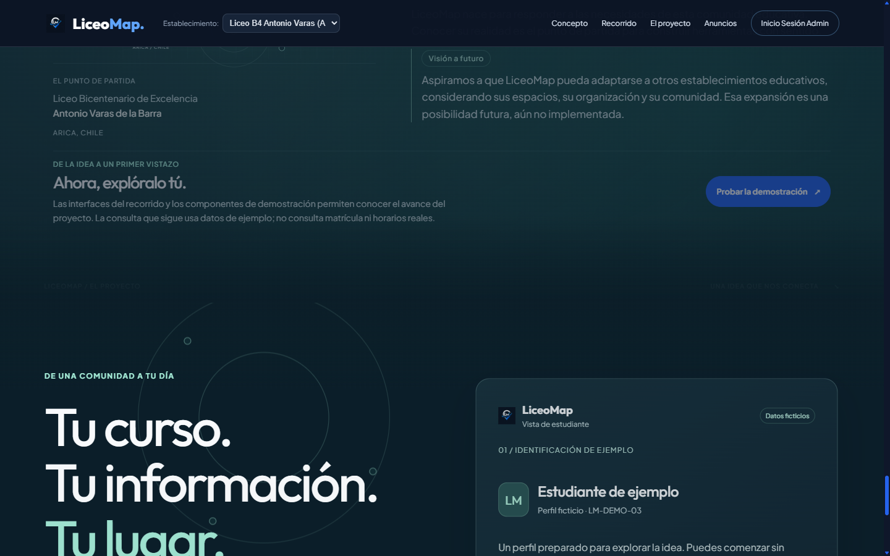

LiceoMap · Fase 5.3
Comparación de capturas reales de Chrome. Las escenas de lectura mantienen su composición; el cambio principal está en la interpolación y el ritmo entre ellas.
Ver secuencia de cámara, capítulos y transformación → · Informe
El problema · lectura de escritorio

5.2 · antes
5.3 · después
La solución · lectura móvil

5.2 · antes

5.3 · después
Visión · composición de lectura
5.2 · antes

5.3 · después
Desenlace · mitad de la transición

5.2 · antes

5.3 · después: llegada tipográfica y de interfaz más adelantada
Estas capturas no miden FPS ni sustituyen una sesión de scroll con dispositivos físicos. La secuencia enlazada muestra estados asentados, no una grabación temporal.